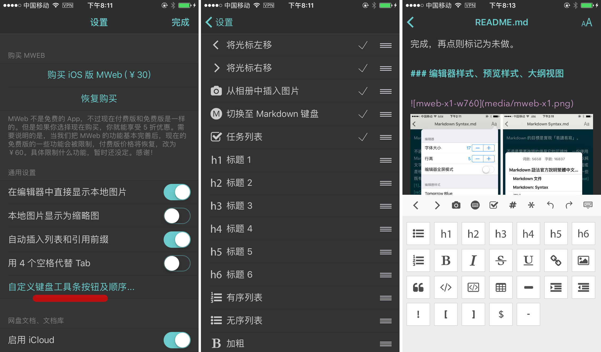
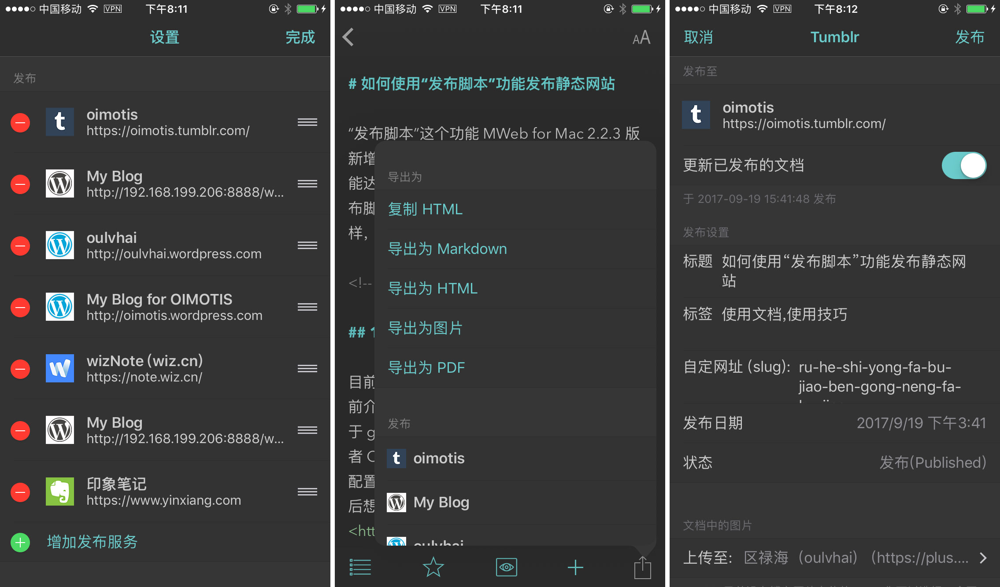

MWeb for iOS 2.3.4 版发布
此版本的更新情况为：
- 增加发布到 tumblr
- 修正 imgur 图床问题
- 支持 iOS 11 拖拽功能。就是可以把图片拖拽到编辑器以插入图片。
- 增加支持自定义键盘工具条的按钮及顺序。可以在设置页面中设置。
- 增加支持 utf16 编码的文档。
- 预览模式下，点击文件连接可直接打开，以方便使用 gitbook 的朋友。另外点击网址的话，会在 App 内打开了，不再用 Safari 打开。
- 其它 bug 修正。
下面简单说一下自定义键盘和发布到 tumblr 这两个功能。
自定义键盘工具条按钮及顺序
这个功能的使用方法如下图，一看图即知如何使用：

如上图，在设置页面点 “自定义键盘工具条按钮及顺序” 即可以进入中间的页面。在中间的页面你可以用点击来勾选和取消勾选，可以拖动来调整顺序。已勾选的按钮则会显示在最右图的键盘的工具条上。如果工具条的按钮过多，则可以进行左右拖动。
值得一说的是 “切换至 Markdown 键盘” 这个按钮，点击后会如最右图，显示几乎所有按钮。在 4.7 寸 iPhone 下，最多显示 10 个按钮而不会出现滚动条。所以看你的使用习惯，你可以选择把全部按钮放在工具条上，用拖动方式使用；也可以使用 “切换至 Markdown 键盘” 按钮和 10 个常用按钮进行配合。
发布到 Tumblr 功能
这个功能如下图所示，在设置页面增加 Tumblr 发布服务后，即可使用。

值得一说的是最右边的图中的 “文档中的图片” 上传至功能，也就是图床功能。之所以有这个功能，是因为 Tumblr 发博文没有传图的 API，带图片的文章发布到 Tumblr 后就变成没有图片的了。我这里的解决办法是先上传至图床，然后再发布至 Tumblr。这样就完美解决了 Tumblr 发纯博文不支持图片的问题。